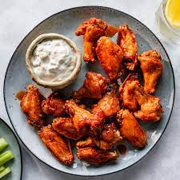

Buffalo Chicken Wings

Description
There are hot wings and then there are Buffalo wings. Buffalo, New York, is the home of the hot wing, and unlike other wings, these prized poultry parts are never battered or breaded. Instead, Buffalo wings are fried naked, making them gluten free and safe for people with Celiac disease (assuming they're fried in a fresh, uncontaminated batch of oil). The signature sauce is also what sets Buffalo wings apart—a simple but tasty combination of hot sauce and butter.
These wings are easy to prepare with just a few pantry ingredients. If you want more heat, you can adjust the proportion of hot sauce. If you'd like a hint of sweetness, you can stir in a little brown sugar to taste. It's really that simple.
Ingredients
- 8 chicken wings or 16 drumettes and wing pieces
- 4 cups canola, vegetable, or peanut oil, for frying
- 2 tablespoons hot sauce, such as Frank's Red Hot or Louisiana
- 1 1/2 tablespoons unsalted butter, plus more if needed
- /2 teaspoon distilled vinegar
- Brown sugar, to taste
- Kosher salt, to taste
- Blue cheese dressing, ranch dressing, or garlic Parmesan dip, for serving
Steps
- Gather the ingredients
- Remove the tips from the wings and reserve for making chicken stock
- Cut the joint between the drumette and the flat portion of the wings. Pat the wings dry with paper towels-- this will ensure they fry up crispy, and there will be less splatter from water hitting the hot oil
- Heat 3 inches of oil in a deep pan to 375 F
- Meanwhile in a small separate saucepan, combine the hot sauce, butter and vinegar over low heat until the butter melts
- Taste the sauce to see if it's to your liking. If you'd like to reduce the heat of the sauce, feel free to add more butter, a little water, or some brown sugar. To increase the heat, add more hot sauce. Add salt if needed
- Fry the wings in 2 to 3 batches for 12 to 15 minutes per batch, or until crispy and cooked through. Give the oil time to reheat before frying the next batch to ensure all of the wings are crispy
- Toss the wings in a bowl with the warm sauce
- Serve with blue cheese dressing, ranch dressing or garlic parmesan dip. Enjoy